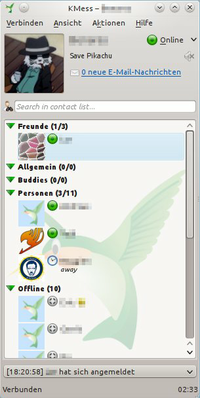
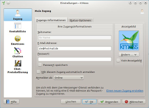
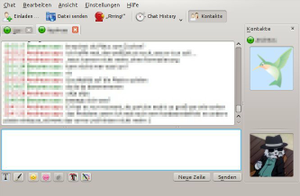

KMess
Archivierte Anleitung
Dieser Artikel wurde archiviert, da er - oder Teile daraus - nur noch unter einer älteren Ubuntu-Version nutzbar ist. Diese Anleitung wird vom Wiki-Team weder auf Richtigkeit überprüft noch anderweitig gepflegt. Zusätzlich wurde der Artikel für weitere Änderungen gesperrt.
Zum Verständnis dieses Artikels sind folgende Seiten hilfreich:
KMess  ist ein speziell auf das Windows-Live-Protokoll zugeschnittener Instant-Messenger, der sich besonders gut in die Desktop-Umgebung KDE integriert. Hier nutzt das Programm vorhandene KDE-Komponenten wie den Benachrichtigungsdienst, die Brieftasche und die Standardanwendungen wie Browser und E-Mail-Programm.
ist ein speziell auf das Windows-Live-Protokoll zugeschnittener Instant-Messenger, der sich besonders gut in die Desktop-Umgebung KDE integriert. Hier nutzt das Programm vorhandene KDE-Komponenten wie den Benachrichtigungsdienst, die Brieftasche und die Standardanwendungen wie Browser und E-Mail-Programm.

Installation¶
Hinweis:
Aufgrund eines Weiterleitungsfehlers im Zusammenhang mit Serverwechseln seitens des Windows-Live-Betreibers Microsoft ist es derzeit manchen Benutzern mit hotmail.com- oder msn.com-Adressen nicht möglich, die Kontaktliste abzurufen. Der Benutzer "lekensteyn" aus der KMess-Community stellt einen Patch bereit. Benutzern von Ubuntu 11.04 Natty Narwhal bietet er Pakete  für 32-Bit- und 64-Bit-Plattformen an, die diesen Patch schon beinhalten. Alle anderen müssen aus dem fehlerbereinigten Quellcode selber ein Paket kompilieren und installieren.
für 32-Bit- und 64-Bit-Plattformen an, die diesen Patch schon beinhalten. Alle anderen müssen aus dem fehlerbereinigten Quellcode selber ein Paket kompilieren und installieren.
KMess kann direkt aus den Quellen installiert werden [1]
kmess
 mit apturl
mit apturl
Paketliste zum Kopieren:
sudo apt-get install kmess
sudo aptitude install kmess
Das Programm kann über den Eintrag "Anwendungen -> Internet -> Live-Messenger-Programm (KMess)" gestartet werden.

Zugang einrichten¶
Beim ersten Start bietet das Programm die Einrichtung eines Zugangs an. Weitere Zugänge lassen sich entweder über das Menü "Aktionen -> Neuen Zugang erstellen" oder "Aktionen -> KMess einrichten -> Zugänge" hinzufügen. Entweder man gibt die E-Mail-Adresse und das Passwort eines bestehenden Kontos an, oder man registriert zuvor eine neue E-Mail-Adresse als Passport-Adresse, indem man dem Verweis im Einrichtungsdialog folgt. Wer möchte, kann sich nach dem Programmstart automatisch mit diesem Zugang und mit einem bestimmten Status verbinden lassen, falls man auch das Passwort des Zugangs speichert.
Unter dem Reiter "Status-Optionen" wird der Zeitraum bestimmt nach der der Statuswechsel automatisch auf "Inaktiv" gesetzt wird. Weiterhin kann festgelegt werden, ob Benachrichtigungen aktiv sind, wenn der Status auf "Beschäftigt" gesetzt ist.
Das Hauptfenster, das zur manuellen Anmeldung dient bietet die Option, den Zugang automatisch wieder zu verbinden, falls eine bestehende Verbindung unterbrochen wird. Bei Verbindung beherbergt es die Kontaktliste.
Status und Statusnachrichten ändern¶
Momentan steht eine Reihe festgelegter, nicht erweiterbarer Statusklassen zur Verfügung: "Online", "Abwesend", "Inaktiv", "Bin gleich zurück", "Beschäftigt", "Beim Mittagessen", "Am Telefon" und "Unsichtbar". Es ist jedoch möglich, in der Kontaktleiste neben der Anzeige des aktuellen Status eine Statusnachricht zu hinterlegen.
Kontakte und Gruppen¶
Hinzufügen und Löschen¶
Neue Kontakte und Gruppen fügt man im Menü "Aktionen" der Kontaktliste hinzu und gibt die E-Mail-Adresse des Kontakts bzw. den Namen der Gruppe an. Kontakte lassen sich in Gruppen verschieben, indem man sie mit der gedrückten linken Maustaste  über eine Gruppe zieht und die Taste freigibt. Kontakte dürfen in mehreren Gruppen vertreten sein: Dafür setzt man in den Eigenschaften des Kontakts unter dem Reiter "Informationen" die entsprechenden Haken.
über eine Gruppe zieht und die Taste freigibt. Kontakte dürfen in mehreren Gruppen vertreten sein: Dafür setzt man in den Eigenschaften des Kontakts unter dem Reiter "Informationen" die entsprechenden Haken.
Gelöscht werden sie über einen Rechtsklick  auf den Kontakt bzw. die Gruppe. Davon ausgenommen ist die Gruppe "Personen".
auf den Kontakt bzw. die Gruppe. Davon ausgenommen ist die Gruppe "Personen".
Eigenschaften eines Kontakts¶
Jeder Kontakt verfügt über spezifische Informationen, die man bei Bedarf lokal verändern kann. Die Eigenschaften lassen sich entweder in der Kontaktliste nach Rechtsklick auf den "Kontakt -> Eigenschaften" oder alternativ nach einem Linksklick auf das bisherige Anzeigebild eines Kontaktes in der Kontakte-Seitenleiste des Chatfensters aufrufen.
Erscheinungsbild und Verhalten¶
In den Zugangseinstellungen lassen sich das Erscheinungsbild und das Verhalten sowohl des Chatfensters als auch der Kontaktliste bestimmen. Die getroffenen Einstellungen gelten nur für diesen jeweiligen Zugang. So können für verschiedene Zugänge verschiedene Einstellungen getroffenen werden.
Anzeigebilder ändern¶
Jeder Kontakt und auch der eigene Zugang können ein Bild verwenden das in der Kontaktliste und meistens auch im Chatfenster der jeweils anderen angezeigt wird. Dieses Bild kann in den Zugangseinstellungen bzw. in den Eigenschaften des Kontakts bestimmt werden. Wenn kein Bild gesetzt ist, wird stattdessen das KMess-Logo angezeigt - dies gilt auch für den eigenen Zugang, es sei denn, man hat das eigene Anzeigebild deaktiviert.

Erscheinungsbild des Chatfensters ändern¶
Im Menüpunkt "Chatten" ist es möglich, das Chatfenster an die eigenen Bedürfnisse anzupassen und Änderungen mit einer Vorschau auszuprobieren. Mit der Wahl eines Stils verändern sich Layout, Hintergrundfarbe und Struktur des angezeigten Textes. Zusätzlich lassen sich Smileys ("Emoticons") deaktivieren, Nachrichten gruppieren und der Zeitstempel anpassen oder deaktivieren. Sowohl für die eigenen als auch für die Nachrichten der Gesprächspartner können Schriftart, -farbe und -größe bestimmt, außerdem Schrifteffekte und "Messenger-Plus!"-Effekte aktiviert werden. Viele dieser Einstellungen können während des Chats in den Menüs "Bearbeiten" und "Ansicht" des Chatfenster geändert werden. Unter dem Reiter "Verhalten" werden die Gruppierung von Chats und die Anzeige des eigenen Bildes im Chatfenster geregelt.
Erscheinungsbild der Kontaktliste ändern¶
Im Menüpunkt "Kontaktliste" kann bestimmt werden, ob ungelesene Mails der Zugangsadresse angezeigt, den Kontakten der gerade auf dem eigenen Rechner spielende Musiktitel als Statusnachricht angezeigt, das KMess-Logo als Hintergrundbild verwendet und die "Messenger-Plus!"-Formatierung aktiviert werden soll.
In der Kontaktliste können unter ihrem Menüpunkt "Ansicht" Offline-Kontakte und leere Gruppen, aber auch erlaubte und bereits gelöschte Kontakte ein- bzw. ausgeblendet werden. Nützlich mag es sein, ganz unten in der Kontaktliste den Ereigniskasten anzeigen zu lassen, der über eigene Statusänderungen und die von Kontakten informiert.
Emoticons¶
Im Menupünkt "Emoticons" kann man zwischen verschiedenen, in KDE installierten Smiley-Sets auswählen und zusätzlich eigene Smileys mit jeweils einem Kurzbefehl und einer Bilddatei definieren. Diese werden in der XML-Datei ~/.kde/share/apps/kmess/ZUGANG/customemoticons/emoticons.xml abgelegt.
Einzelne Emoticons können für bestimmte Kontakte gesperrt werden, indem man sie nach einem Rechtsklick auf eine Negativliste setzt. In den Eigenschaften des Kontakts unter dem Reiter "Emoticons" können die Sperren wieder aufgehoben werden.
Chat-Protokollierung¶
KMess kann Unterhaltungen aufzeichnen. Sie werden dann für jeden Kontakt gebündelt als XML-Dateien im Verzeichnis ~/.kde/share/apps/kmess/ZUGANG/chatlogs/ gespeichert. Die Einstellung trifft man im Menüpunkt "Chat-Protokollierung", indem man den entsprechenden Haken setzt. Ist dies aktiviert, lassen sich die Unterhaltungen zusätzlich in einem selbst gewählten Verzeichnis als HTML- oder Textdatei speichern, zusätzlich optional in nach Datum strukturierten Unterverzeichnissen.
Möchte man nur einzelne Gespräche aufzeichnen, kann man ein Protokoll auch mit
Strg +
S oder einem Rechtsklick in den Nachrichtenbereich des Chatfensters "Chat als Datei speichern..." anlegen.
Die als XML-Datei gespeicherten Protokolle können sehr einfach im Menü der Kontaktleiste über "Aktionen -> Chat-Protokolle anzeigen..." oder in der Menüleiste des Chatfensters über "Chat-History" geöffnet und nach Zugängen und Kontakten sortiert mit Kalender gelesen werden.
Video- und Audio-Konferenz¶
Zum jetzigen Zeitpunkt ist es nicht möglich, mit KMess über Webcam und Mikrofon zu kommunizieren. Die Entwickler haben allerdings angekündigt , Video-Chats in KMess 2.1 ermöglichen zu wollen.
 - Übersichtseite für Instant Messenger
- Übersichtseite für Instant Messenger- Erstellt mit Inyoka
-
 2004 – 2017 ubuntuusers.de • Einige Rechte vorbehalten
2004 – 2017 ubuntuusers.de • Einige Rechte vorbehalten
Lizenz • Kontakt • Datenschutz • Impressum • Serverstatus -
Serverhousing gespendet von